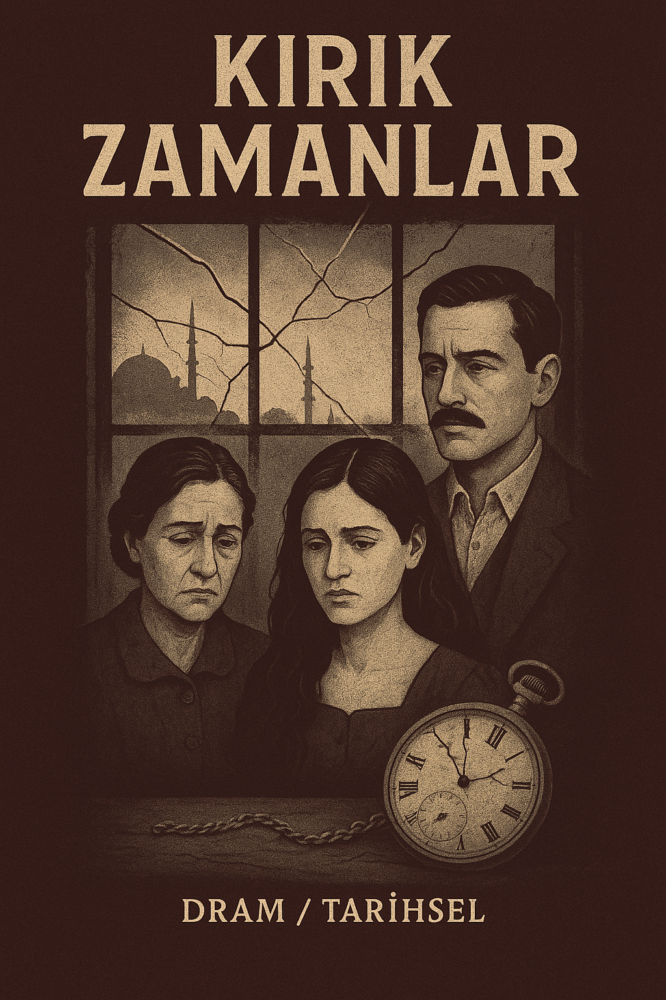
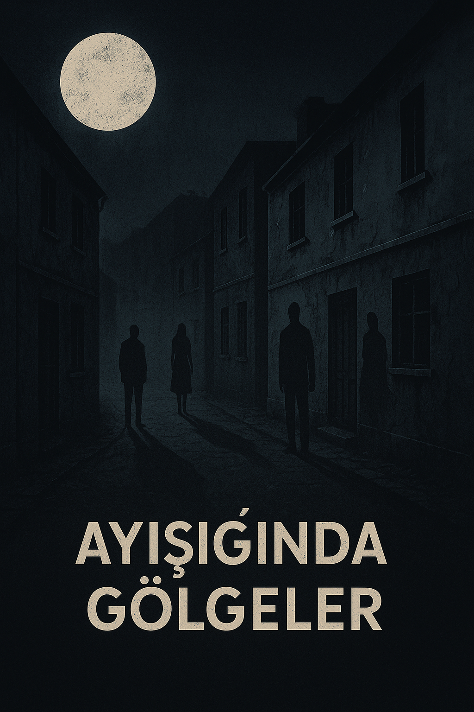
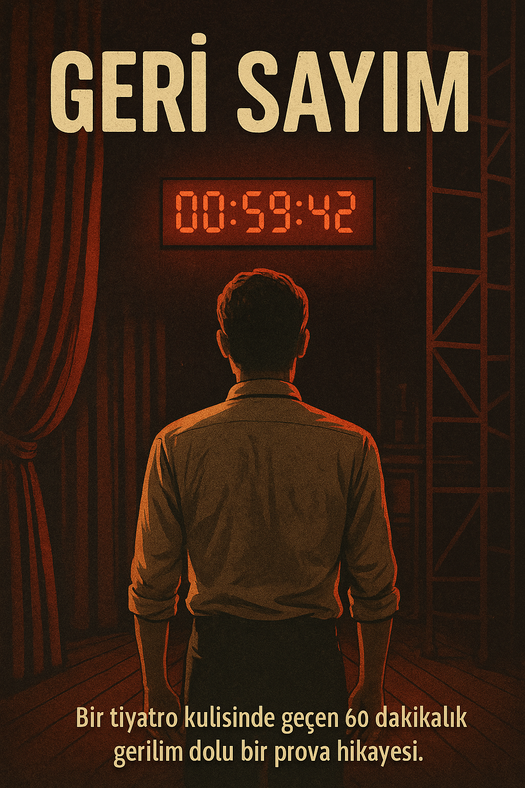
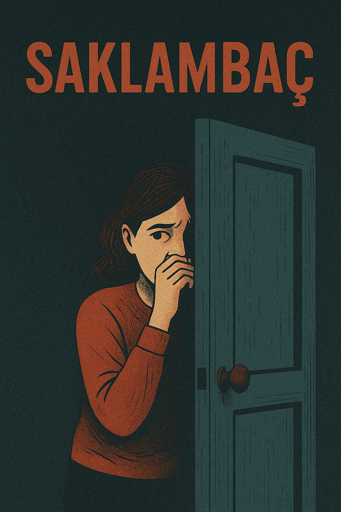
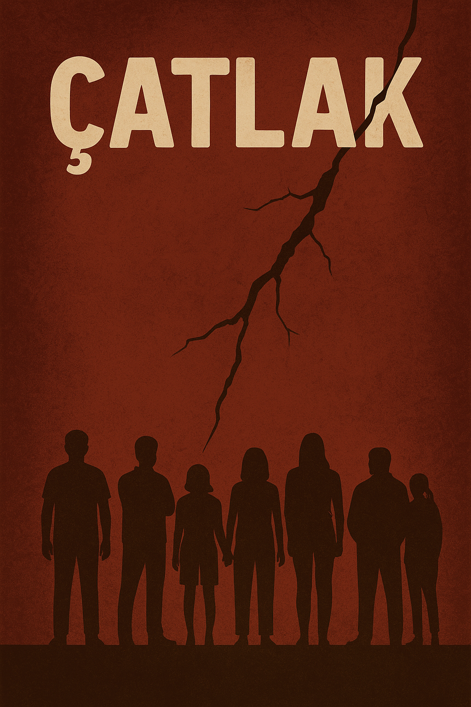

🎭 Sahnelediğimiz Oyunlar

2. Kırık Zamanlar
Zamanın içinde kaybolan bir adamın, geçmiş ve gelecekle hesaplaşması.
🎟️ Bilet Al

3. Ayışığında Gölgeler
Bir kasabanın en karanlık gecesinde ortaya çıkan sırlarla yüzleşme.
🎟️ Bilet Al

4. Geri Sayım
Bir tiyatro kulisinde geçen 60 dakikalık gerilim dolu bir prova hikayesi.
🎟️ Bilet Al

6. Saklambaç
Çocukken oynadığımız oyun, yetişkinlerin karanlık dünyasına taşınırsa...
🎟️ Bilet Al

7. Çatlak
Bir apartman duvarındaki çatlağın, tüm mahalleyi nasıl parçaladığını izleyin.
🎟️ Bilet Al
8. Kahkaha Molası
İç içe geçmiş skeçlerle ilerleyen bol kahkahalı bir topluluk komedisi.
🎟️ Bilet Al